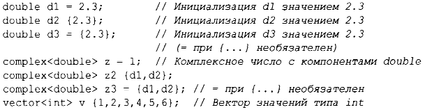
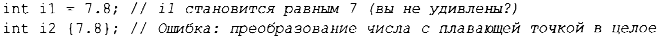
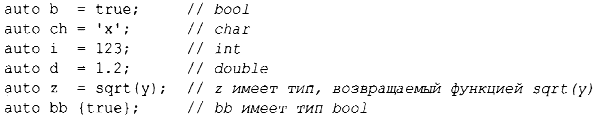

Прежде чем можно будет использовать объект, ему должно быть присвоено значение. С++ предлагает различные записи для выражения инициализации, например используемую выше запись с =, и универсальную форму, основанную на списках инициализации в фигурных скобках:
Применение = традиционно и восходит к С, но если у вас есть сомнения, используйте универсальную форму со списком в фигурных скобках { } . Это по крайней мере спасет вас от преобразований с потерей информации:
К сожалению, допускаются и неявно применяются сужающие преобразования, которые теряют информацию, такие как douЫe в int или int в char. Проблемы, вызываемые неявными сужающими преобразованиями, - это цена, заплаченная за совместимость с С (§ 16.3).
Константы (§ 1.6) не могут быть оставлены неинициализированными, а переменные могут оставаться неинициализированными лишь в крайне редких случаях. Не вводите в программу имя, пока у вас не будет для него подходящего значения. Определяемые пользователем типы (такие, как string, vector, Ма trix, Motor _ controller или Orc _ warrior) могут быть определены как неявно инициализируемые (§4.2.1 ).
При определении переменной вам не нужно явно указывать тип, если он может быть выведен из инициализатора:
При использовании auto мы склонны применять =, поскольку не имеется никакого потенциально проблематичного преобразования типов, но если вы предпочитаете последовательно использовать только { } , то можете это делать.
Мы используем auto там, где у нас нет конкретной причины упоминать тип явно. "Конкретные причины" включают следующее.
Используя auto, мы избегаем избыточности и записи длинных имен типов. Это особенно важно в обобщенном программировании, в котором определение точного типа объекта может быть трудным для программиста, а имена типов могут быть довольно длинными(§ 12.2).